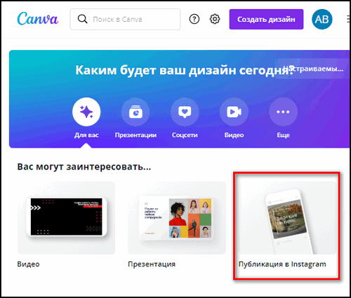
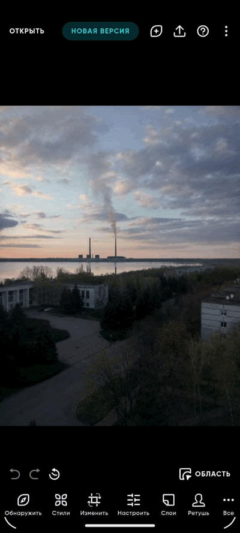
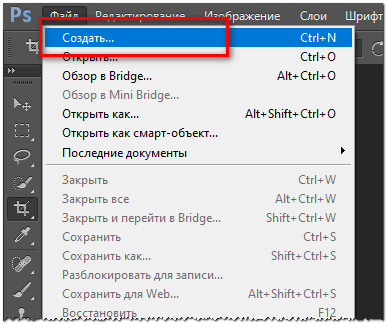
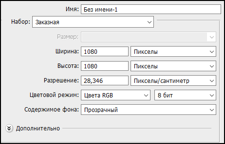
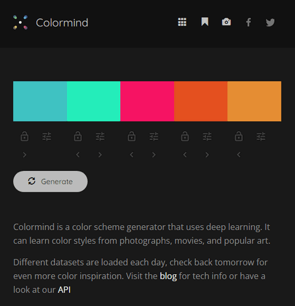

Как оформить страницу в Инстаграме: личный и рабочий профиль

Идеи для оформления аккаунта в Инстаграме* можно посмотреть у других блогеров, воспользоваться платформами для картинок. Форматы ведения блога начинаются с хаотичных изображений, без выдержанного стиля, до раскладок и шахматного порядка.
Варианты оформления страницы в Инстаграме*
В социальной сети нет определенный границ, как можно оформить свой профиль. Популярным становится стиль «soft», который предполагает пастельные оттенки. Или, indie kid, который напротив – слишком яркий.
Важно следить за своей аудиторией и не допускать появления ботов, от них сразу нужно избавляться при помощи сервисов или в ручном режиме, читайте способы на нашем сайте.
Есть схемы по оформлению профилю Инстаграма*, включающие:
- диагональ. Снимки в одном стиле, с похожими предметами размещаются слева-направо;
- шахматный ряд. Обычно чередуют с публикациями, где нет фотографий. Такой стиль подойдет для экспертов и обладателей интернет-магазинов;
- по цветам радуги. Интересный способ, как сделать Ленту необычной: постепенно размещают фотографии, которые отличаются оттенком;
- блоки. Посетитель страницы видит первые 9 фото. Поэтому автор должен размещать контент блоком: первые девять фото в одном стиле, далее – такое же количество в другом.
 Блогеры публикуют не только личные фото: селфи или в полный рост, но и используют раскладки с предметами. Это может быть снимок с чашкой кофе, заведением или городским пейзажем.
Блогеры публикуют не только личные фото: селфи или в полный рост, но и используют раскладки с предметами. Это может быть снимок с чашкой кофе, заведением или городским пейзажем.
Использовать шаблоны для магазина
Оформления рабочего аккаунта в Инстаграме* проще сделать с помощью шаблонов. Их можно получить через онлайн-сервисы, воспользовавшись поисковыми системами или обратившись к дизайнеру. В сервисе Canva есть заранее подготовленные шаблоны, которые можно использовать для создания единого стиля: платно или бесплатно. Как использовать Canva для оформления страницы в Инстаграме*:
- Зайти в веб-версию Канвы – авторизоваться, воспользовавшись страницей в Google или Facebook*.
- Перейти к категориям – Instagram* – Публикации.

- Выбрать шаблон – рядом с ним появится название категории и кнопка: «Показать все».
- Открыть перечень – выбрать несколько шаблонов, чтобы подготовить публикации.
Для работы с шаблонами в своем профиле, нужно заранее создать фотографии. В сервисе картинки нужно вставить, подобрав рамку.
В Canva можно создать шаблоны самостоятельно, меняя только графические элементы. Для этого, перейдя в раздел: «Instagram* публикации», нужно выбрать вариант: «Пустой холст». И с помощью вкладок: «Элементы», «Фотографии» добавлять медиафайлы.
Мобильные приложение
Оформление личного Инстаграм* аккаунта все чаще создают с помощью мобильных приложений: это просто и быстро. По причине того, что во многих мобильных редакторах есть экспорт в социальные сети, автор может сразу переносить снимки.
Есть два популярных способа, как обработать снимок:
- использовать отдельное программное обеспечение по оформлению;
- маски и фильтры: встроенные в Инстаграме* или Snapchat.
Помимо сторонних редакторов, новые устройства на базе Android и iOS поддерживают встроенные инструменты. С их помощью можно изменить насыщенность, добавить резкости и подобрать минимальное оформление. Дополнительные приложения для редактирования в Инстаграме*:
- A color story. Подборки фильтров и инструментов для редактирования;
- Pics Art. Масштабный редактор, который включает добавление элементов, работу с видео и рисование;
- CapCut. Приложение для работы с видео. К примеру, для создания оригинального ролика для раздела Reels;
- Polarr. Пользовательские стили и стандартные. Можно выбирать оформление, которое применяют к своим снимкам другие блогеры;
- SKRWT. Платное приложение, но необходимое при работе с пейзажами и профессионального редактирования.

Используя Pics Art можно редактировать личный снимки для личного профиля, не устанавливая дополнительных продуктов. Для любителей селфи есть отдельная утилита AirBrush, которая редактирует фото и убирает недостатки.Сделать оформление через компьютер
Воспользовавшись стандартным продуктом от Adobe, владелец страницы сможет создать оформление для своего профиля. Причем, не играет роли уровень владения программой: можно использовать фоновое изображение, добавить текст и разместить снимок посреди холста. Как создать шаблон для Инстаграма*:
- Зайти в Photoshop – нажать сверху «Создать».
- Выбрать размер: 1080 на 1080 – прозрачный.

- Снизу инструмент: «Заливка» - указать оттенок.
- Раздел: «Создать» - Разместить.
- Выбрать на компьютере ранее сохраненный снимок.
- Добавить изображение – инструмент: «Текст».

- Добавить надпись – Создать.
- Сохранить как – файл в формате PNG, высокое качество.
- Получить на компьютер и разместить в Инстаграме*.
В последних обновлениях компьютерной версии появилась функция размещения снимков, без использования эмулятора или дополнительных инструментов. Важно, чтобы у снимка был подходящий размер и оформление. Потому что через компьютерную версию нельзя отредактировать фото. Дополнительные сервисы с компьютерной версии:
- Remove.bg. Удаление фона с изображения за пару кликов;
- Lets Enhance. Увеличивает картинку без потери качества;
- Colormind. Генератор цветовой палитры, если нужно подобрать стиль ведения Инстаграма*.

После создания первого шаблона его нужно дополнительно сохранить в формате PSD. В следующий раз, чтобы заново не создавать шаблон, достаточно открыть файл и удалить слой, который содержит снимок. С текстом – отредактировать.Оригинальные темы для Инстаграма*
Важно не только привлечь аудиторию визуалом, а и подобрать интересные темы.
- разделение текста абзацами. В этом поможет бот в Телеграме: Text4Bot;
- смайлы, как элементы внимания;
- короткие списки. В основном маркированные, чтобы перечислить преимущества;
- грамотность. В тексте должны присутствовать знаки препинания;
- продолжение в карусели. Если текст не поместился в описании – его стоит перенести в заметку, а оттуда сделать скриншот.
- развитие бизнеса и инвестирование;
- материнство, тайменеджмент;
- осознанный подход в потреблению: продуктов питания, добавок, одежды;
- бизнес на дому. С учетом пандемии, многие специалисты стали искать «удаленную работу»;
- хобби и увлечения.
Постепенно теряет популярность «психология», «социология» и «романтические отношения». Их заменяют темы, которые касаются финансового благополучия. Поэтому, выбирая идеи для публикаций, стоит обратиться к популярным хештегам и посмотреть, какие темы получили у конкурентов больше отклика.
Описание и аватарка
Главное, что видит посетитель как только заходит в блог – это описание и аватарку. Несмотря на небольшой размер основного снимка, именно он задает тему и настроение. Краткие рекомендации по подбору аватарки:
- минималистка, детский рисунок, селфи. Если это личная страница;
- значок бренда, название или логотип с сайта – для интернет-магазинов;
- снимок популярной личности, название интернет-издания, если профиль для фанатского аккаунта или новостного профиля.
Для аватарки не рекомендуется использовать снимок в полный рост или стороннее изображение, не относящееся к теме аккаунта. Так, блогер-фотограф, занимающийся съемкой заброшенных мест или архитектуры, может установить на главную фотографию красивого строения. Владелец личной страницы, которые планирует продвигать личные услуги – свое фото вблизи. В описании нужно указывать тематику, выделяя преимущества. Если это шоурум: «У нас есть вещи от любимых блогеров» или «Создаем футболки и худи по индивидуальному дизайну». Для магазинов есть правила: указать свою геолокацию (если есть), способы связи, рабочий график.